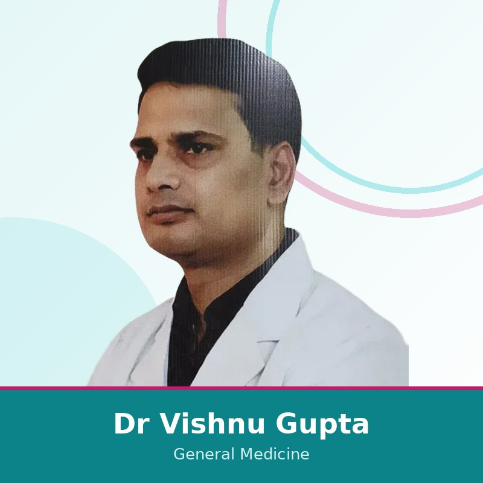

रोज़मर्रा और पुरानी सेहत के लिए सावधान निदान एवं निरंतर देखभाल — डायबिटीज़ और थायरॉइड से लेकर रक्तचाप, श्वसन और मौसमी बीमारियों तक, निर्माण नगर, जयपुर के हमारे 24x7 हॉस्पिटल में।


जनरल फिजिशियन बड़ों की सामान्य और पुरानी बीमारियों का निदान और प्रबंधन करते हैं, जिनमें डायबिटीज़, थायरॉइड, उच्च रक्तचाप, श्वसन और पेट की समस्याएँ, माइग्रेन, बुखार और मौसमी बीमारियाँ शामिल हैं, और ज़रूरत होने पर अन्य विशेषज्ञों के साथ समन्वय करते हैं।
हाँ। हम व्यक्तिगत उपचार योजनाओं और इन-हाउस लैब जाँच के साथ डायबिटीज़, थायरॉइड और रक्तचाप का निरंतर प्रबंधन प्रदान करते हैं।
डॉ. विष्णु गुप्ता, MBBS और MD (जनरल मेडिसिन) के साथ 10+ वर्ष के अनुभव वाले कंसल्टेंट फिजिशियन, जनरल मेडिसिन देखभाल का नेतृत्व करते हैं।
24x7 खुला। व्हाट्सएप पर अनुरोध भेजें या कॉल करें, हम सही अपॉइंटमेंट बुक करने में मदद करेंगे। कैशलेस बीमा, TPA, RGHS और MAA योजना स्वीकार्य।